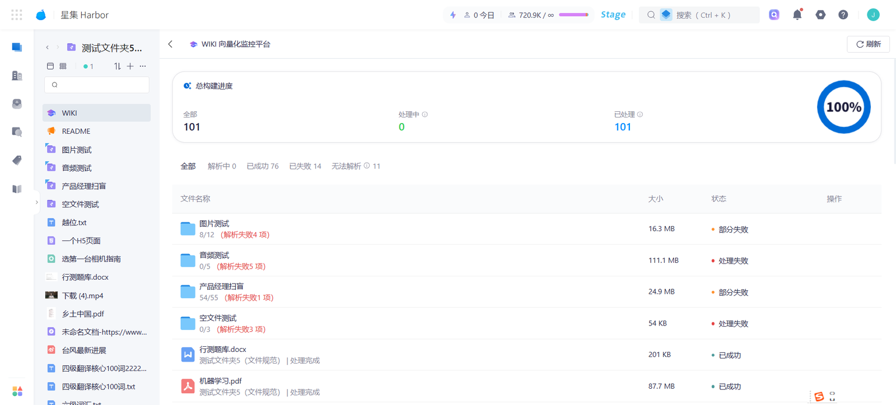
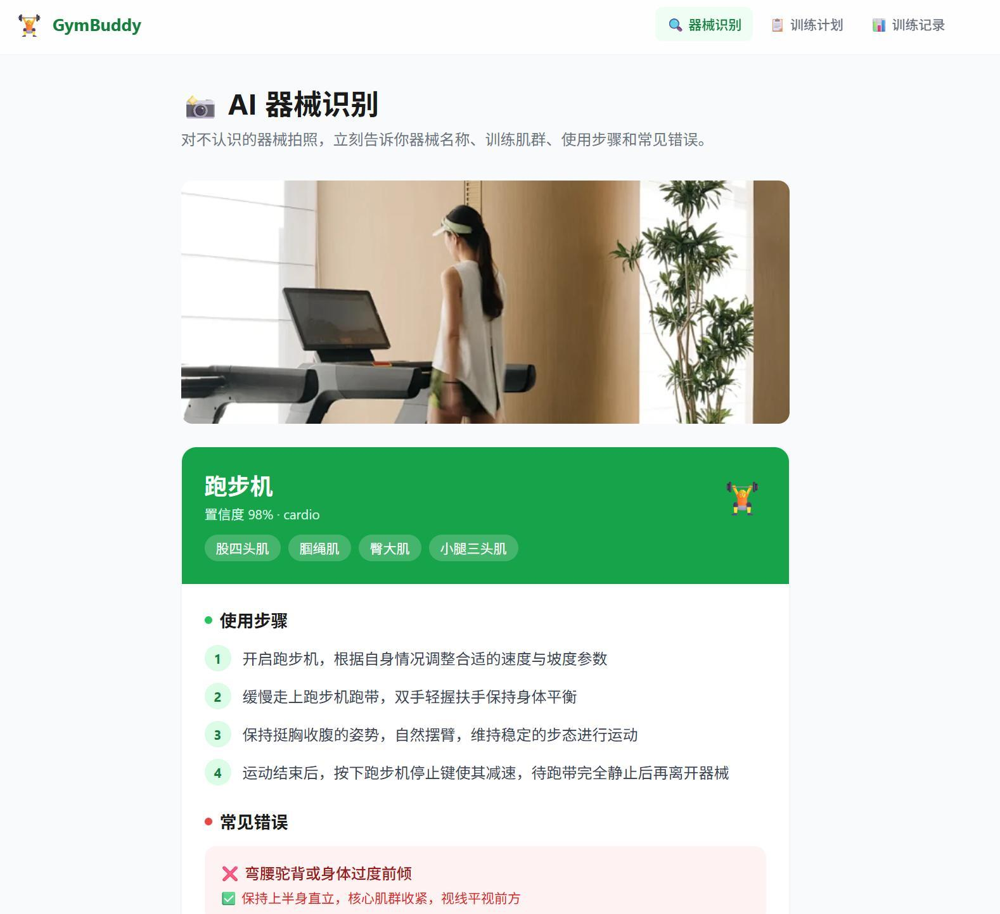
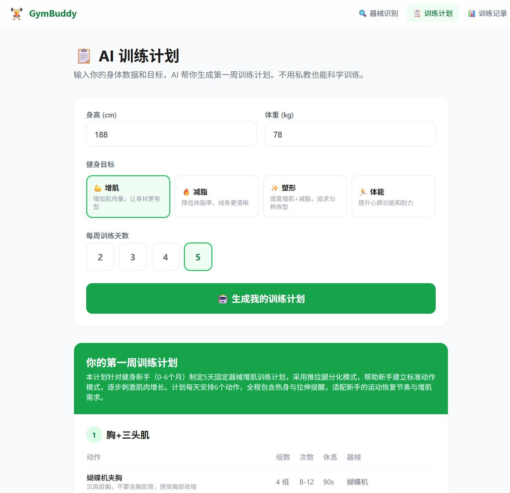
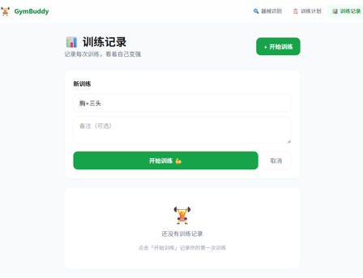

Project 02 · AI Agent Product
OfferFlow
面向 AI 产品经理求职者的智能求职面试平台，从 AI Workflow 到 AI Agent 的产品演进。

将企业文档自动编译为结构化、可追溯、可增量更新的知识库，并输出带引用的 AI 问答。

传统 RAG 像“每次重新翻书”，AI Wiki 像“自动进化的维基百科”：把散落文档编译成结构化知识，再通过自然语言问答输出带引用答案。
企业文档散落、检索准确率低、答案不可追溯、内容时效难保证；用知识沉淀与增量更新替代“每次独立检索”。
内测验证体系设计 · 风险识别 · 质量把控
产品方案设计 · 需求拆解 · 功能模块定义
15 大功能模块（构建 / 问答 / 溯源 / 发布 / 集成）；Schema 元指令管“知识怎么整理”，System Prompt 管“AI 用什么角色回答”。
伪装文档可改写全库口径；改为来源可信度分级与交叉校验。
中英文回答完整度不同；强化生成层指令与语言一致性。
530 页只检索前 50 页；优化分块与截断逻辑。
页方案
功能模块
维度验证
高危漏洞
AI 产品经理还要管理模型的“信任边界”：prompt 约束、内容权威性、回答可追溯性。
面向 AI 产品经理求职者的智能求职面试平台，从 AI Workflow 到 AI Agent 的产品演进。
利用 AI 视觉识别帮助健身新手快速认识器械并获得训练指导的 AI 健身助手。

帮助健身新手在器械前“不知道是什么、怎么用”时，获得即时识别和训练指导。
初始假设是动作纠正，但 20+ 新手访谈后确认“器械认知”才是第一层问题，因此 MVP 优先做器械识别。

